fastmath.core
Collection of fast math functions and plethora of constants known from other math libraries.
Primitive math operators
Based on Primitive Math by Zach Tellman several operators are introduced and replace clojure.core functions. All operators are macros and can’t be used as functions. List includes:
Known from Clojure: * + - / > < >= <= == rem quot mod bit-or bit-and bit-xor bit-and-not bit-set bit-clear bit-test bit-flip bit-not bit-shift-left bit-shift-right unsigned-bit-shift-right inc dec zero? neg? pos? min max even? odd? abs
And additionally:
<<- bit shift left>>- signed bit shift right>>>- unsigned bit shift rightnot==- not equal
Warning: All bool- evaluate all parameters.
To turn on primitive math on your namespace call use-primitive-operators. To turn off and revert original versions call unuse-primitive-operators
Fast Math
Almost all math functions are backed by FastMath library. Most of them are macros. Some of them are wrapped in Clojure functions. Almost all operates on primitive double and returns double (with an exception round or qround which returns long).
Other functions
Additionally namespace contains functions which are common in frameworks like OpenFrameworks and Processing.
Categories
Other vars: * + - / < << <= == > >= >> >>> Ci I0 Si abs acos acosh acot acoth acovercos acoversin acrd acsc acsch aexcsc aexsec ahacovercos ahacoversin ahavercos ahaversin approx approx-eq approx= asec asech asin asinh atan atan2 atanh avercos aversin bessel-j between-? between? bit-and bit-and-not bit-clear bit-flip bit-not bit-or bit-set bit-shift-left bit-shift-right bit-test bit-xor bits->double bool-and bool-not bool-or bool-xor cb cbrt ceil cexpexp cloglog cnorm co-intervals combinations constrain copy-sign cos cos-interpolation cosh cot coth covercos coversin crd csc csch cut dec degrees delta-eq delta= difference-of-products digamma dist double-array->seq double-bits double-double-array->seq double-exponent double-high-bits double-low-bits double-significand eq erf erfc evalpoly even? excsc exp expm1 exsec factorial factorial20 fast* fast+ fast- fast-identity fast-max fast-min floor fma fpow frac gamma gcd group-by-intervals hacovercos hacoversin havercos haversin haversine haversine-dist high-2-exp high-exp hypot hypot-sqrt iabs inc inf? inv-erf inv-erfc inv-gamma-1pm1 invalid-double? itrunc jinc lcm lerp ln log log-I0 log-beta log-combinations log-factorial log-gamma log-gamma-1p log10 log1mexp log1p log1pexp log1pmx log1psq log2 log2int log2mexp logaddexp logb logcosh logexpm1 logistic logit logmxp1 logsubexp logsumexp low-2-exp low-exp make-norm makepoly max mevalpoly min minkowski mlerp mnorm mod muladd nan? neg-inf? neg? negative-zero? negmuladd next-double norm not-neg? not-pos? not== odd? one? order pos-inf? pos? pow pow2 pow3 prev-double qceil qcos qdist qexp qfloor qlog qpow qround qsin qsqrt quad-interpolation quot radians rank rank1 regularized-beta regularized-gamma-p regularized-gamma-q rem remainder rint round round-even round-up-pow2 rqsqrt safe-sqrt sample sec sech seq->double-array seq->double-double-array sfrac sgn sigmoid signum sin sinc sinh slice-range smooth-interpolation smoothstep sq sqrt sum-of-products tan tanh trigamma trunc ulp unsigned-bit-shift-right unuse-primitive-operators use-primitive-operators valid-double? vercos versin wrap xexpx xexpy xlog1py xlogx xlogy zero?
Constants
- -E =
-2.718281828459045 - -HALF_PI =
-1.5707963267948966 - -PI =
-3.141592653589793 - -QUARTER_PI =
-0.7853981633974483 - -TAU =
-6.283185307179586 - -THIRD_PI =
1.0471975511965976 - -TWO_PI =
-6.283185307179586 - CATALAN_G =
0.915965594177219 - E =
2.718281828459045 - EPSILON =
1.0E-10 - FOUR_INV_PI =
1.2732395447351628 - GAMMA =
0.5772156649015329 - HALF_PI =
1.5707963267948966 - INV_FOUR_PI =
0.07957747154594767 - INV_LN2 =
1.4426950408889634 - INV_LOG_HALF =
-1.4426950408889634 - INV_PI =
0.3183098861837907 - INV_SQRT2PI =
0.3989422804014327 - INV_SQRT_2 =
0.7071067811865475 - INV_TWO_PI =
0.15915494309189535 - LANCZOS_G =
4.7421875 - LN10 =
2.302585092994046 - LN2 =
0.6931471805599453 - LN2_2 =
0.34657359027997264 - LOG10E =
0.4342944819032518 - LOG2E =
1.4426950408889634 - LOG_HALF =
-0.6931471805599453 - LOG_PI =
1.1447298858494002 - LOG_TWO_PI =
1.8378770664093453 - MACHINE-EPSILON =
1.1102230246251565E-16 - M_1_PI =
0.3183098861837907 - M_2_PI =
0.6366197723675814 - M_2_SQRTPI =
1.1283791670955126 - M_3PI_4 =
2.356194490192345 - M_E =
2.718281828459045 - M_INVLN2 =
1.4426950408889634 - M_IVLN10 =
0.43429448190325176 - M_LN10 =
2.302585092994046 - M_LN2 =
0.6931471805599453 - M_LOG10E =
0.4342944819032518 - M_LOG2E =
1.4426950408889634 - M_LOG2_E =
0.6931471805599453 - M_PI =
3.141592653589793 - M_PI_2 =
1.5707963267948966 - M_PI_4 =
0.7853981633974483 - M_SQRT1_2 =
0.7071067811865475 - M_SQRT2 =
1.4142135623730951 - M_SQRT3 =
1.7320508075688772 - M_SQRT_PI =
1.7724538509055159 - M_TWOPI =
6.283185307179586 - PHI =
1.618033988749895 - PI =
3.141592653589793 - QUARTER_PI =
0.7853981633974483 - SILVER =
2.414213562373095 - SIXTH =
0.16666666666666666 - SQRT2 =
1.4142135623730951 - SQRT2PI =
2.5066282746310002 - SQRT2_2 =
0.7071067811865476 - SQRT3 =
1.7320508075688772 - SQRT3_2 =
0.8660254037844386 - SQRT3_3 =
0.5773502691896257 - SQRT3_4 =
0.4330127018922193 - SQRT5 =
2.23606797749979 - SQRTPI =
1.7724538509055159 - SQRT_HALFPI =
1.2533141373155001 - TAU =
6.283185307179586 - THIRD =
0.3333333333333333 - THIRD_PI =
1.0471975511965976 - TWO_INV_PI =
0.6366197723675814 - TWO_PI =
6.283185307179586 - TWO_THIRD =
0.6666666666666666 - deg-in-rad =
0.017453292519943295 - double-array-type =
class [D - double-double-array-type =
class [[D - double-one-minus-epsilon =
0.9999999999999999 - jvm-version =
21 - rad-in-deg =
57.29577951308232
>>>
macro
(>>> x y)fastmath.java.PrimitiveMath/unsignedShiftRight function wrapped in macro.
abs
(abs x)\(|x|\) - double version. See iabs.
Examples
Usage
(fastmath.core/abs 1.0)
;;=> 1.0Plot of abs
acos
macro
(acos x)net.jafama.FastMath/acos function wrapped in macro.
Examples
Usage
(fastmath.core/acos 1.0)
;;=> 0.0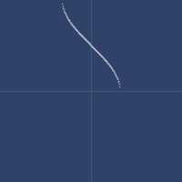Plot of acos
acosh
macro
(acosh x)net.jafama.FastMath/acosh function wrapped in macro.
Examples
Usage
(fastmath.core/acosh 1.0)
;;=> 0.0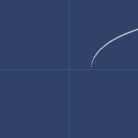Plot of acosh
acot
(acot v)Arccotangent
Examples
Usage
(fastmath.core/acot 1.0)
;;=> 0.7853981633974483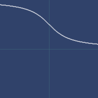Plot of acot
acoth
(acoth v)Area hyperbolic cotangent
Examples
Usage
(fastmath.core/acoth 1.0)
;;=> Infinity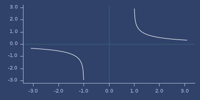Plot of acoth
acsc
(acsc v)Arcosecant
Examples
Usage
(fastmath.core/acsc 1.0)
;;=> 1.5707963267948966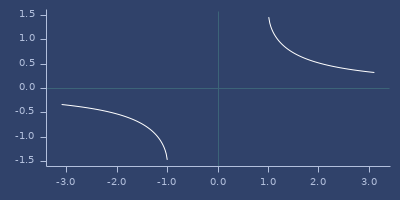Plot of acsc
acsch
(acsch v)Area hyperbolic cosecant
Examples
Usage
(fastmath.core/acsch 1.0)
;;=> 0.8813735870195429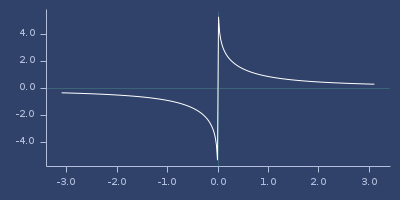Plot of acsch
approx
(approx v)(approx v digits)Round v to specified (default: 2) decimal places. Be aware of double number accuracy.
Examples
Default rounding (2 digits).
(approx 1.232323)
;;=> 1.23Rounding up to 4 digits.
(approx 1.232323 4)
;;=> 1.2323approx-eq
(approx-eq a b)(approx-eq a b digits)Checks equality approximately. See approx.
Examples
Default rounding (2 digits).
(approx-eq 1.232323 1.231999)
;;=> trueRounding up to 4 digits.
(approx-eq 1.232323 1.23231999 4)
;;=> trueKeep an eye on rounding
(approx-eq 1.2349 1.235)
;;=> falseasech
(asech v)Area hyperbolic secant
Examples
Usage
(fastmath.core/asech 1.0)
;;=> 0.0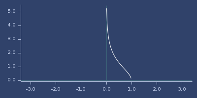Plot of asech
asin
macro
(asin x)net.jafama.FastMath/asin function wrapped in macro.
Examples
Usage
(fastmath.core/asin 1.0)
;;=> 1.5707963267948966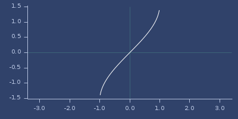Plot of asin
asinh
macro
(asinh x)net.jafama.FastMath/asinh function wrapped in macro.
Examples
Usage
(fastmath.core/asinh 1.0)
;;=> 0.8813735870195429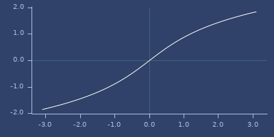Plot of asinh
atan
macro
(atan x)net.jafama.FastMath/atan function wrapped in macro.
Examples
Usage
(fastmath.core/atan 1.0)
;;=> 0.7853981633974483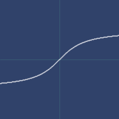Plot of atan
atan2
macro
(atan2 x y)net.jafama.FastMath/atan2 function wrapped in macro.
Examples
atan2 values
(degrees (atan2 1 1))
;;=> 45.0
(degrees (atan2 0 1))
;;=> 0.0
(degrees (atan2 0 -1))
;;=> 180.0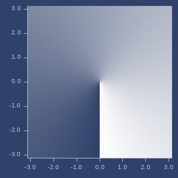Plot of atan2
atanh
macro
(atanh x)net.jafama.FastMath/atanh function wrapped in macro.
Examples
Usage
(fastmath.core/atanh 1.0)
;;=> Infinity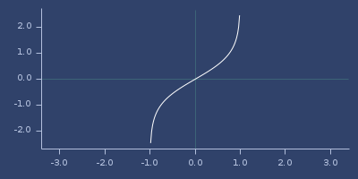Plot of atanh
bessel-j
macro
(bessel-j x y)Bessel J function value for given order and argument.
Examples
bessel-j values
(bessel-j 1 1)
;;=> 0.44005058574493355
(bessel-j 0 1)
;;=> 0.7651976865579666
(bessel-j 0 10)
;;=> -0.24593576445134827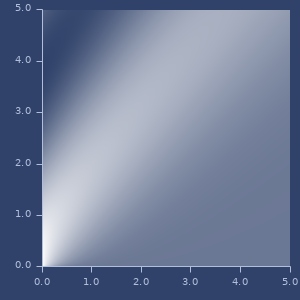Plot of bessel-j
between-?
(between-? [x y] v)(between-? x y v)Check if given number is within the range (x,y].
between?
(between? [x y] v)(between? x y v)Check if given number is within the range x,y.
Examples
Examples
(between? [1 4] 2)
;;=> true
(between? [1 4] 5)
;;=> false
(between? [1 4] -2)
;;=> false
(between? [1 4] 1)
;;=> true
(between? 1 4 2)
;;=> true
(between? 1 4 5)
;;=> false
(between? 1 4 -2)
;;=> false
(between? 1 4 1)
;;=> true
;; Test: ok.bit-and
macro
(bit-and x)(bit-and x y)(bit-and x y & rest)A primitive math version of bit-and
bit-and-not
macro
(bit-and-not x)(bit-and-not x y)(bit-and-not x y & rest)A primitive math version of bit-and-not
bit-clear
macro
(bit-clear x y)fastmath.java.PrimitiveMath/bitClear function wrapped in macro.
bit-flip
macro
(bit-flip x y)fastmath.java.PrimitiveMath/bitFlip function wrapped in macro.
bit-shift-left
macro
(bit-shift-left x y)fastmath.java.PrimitiveMath/shiftLeft function wrapped in macro.
bit-shift-right
macro
(bit-shift-right x y)fastmath.java.PrimitiveMath/shiftRight function wrapped in macro.
bit-test
macro
(bit-test x y)fastmath.java.PrimitiveMath/bitTest function wrapped in macro.
bit-xor
macro
(bit-xor x)(bit-xor x y)(bit-xor x y & rest)A primitive math version of bit-xor
bool-and
macro
deprecated
(bool-and x)(bool-and x y)(bool-and x y & rest)A primitive math version of bool-and
bool-or
macro
deprecated
(bool-or x)(bool-or x y)(bool-or x y & rest)A primitive math version of bool-or
bool-xor
macro
deprecated
(bool-xor x)(bool-xor x y)(bool-xor x y & rest)A primitive math version of bool-xor

ceil
(ceil x)(ceil x scale)\(\lceil x \rceil\). See: qceil.
Rounding is done to a multiply of scale value (when provided).
Examples
Scaled ceil
(ceil 234.312 10)
;;=> 240.0
(ceil 234.312 0.1)
;;=> 234.4
;; Test: ok.Usage
(fastmath.core/ceil 1.0)
;;=> 1.0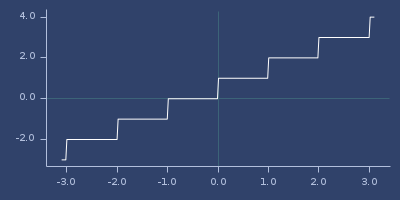Plot of ceil
cnorm
(cnorm v start1 stop1 start2 stop2)(cnorm v start stop)Examples
Constrain result of norm.
(cnorm 1.5 0 1 100 200)
;;=> 200.0
(cnorm 555 200 500)
;;=> 1.0co-intervals
(co-intervals data)(co-intervals data number)(co-intervals data number overlap)Divide sequence to overlaping intervals containing similar number of values. Same as R’s co.intervals()
Examples
Usage
(co-intervals [1 2 3 1 2 3 4 5 6 1 2 3 4 5 6 7 1 1 1 1 -1])
;;=> ([-1.5 1.5] [0.5 2.5] [0.5 3.5] [1.5 4.5] [2.5 5.5] [3.5 7.5])Higher overlap
(co-intervals [1 2 3 1 2 3 4 5 6 1 2 3 4 5 6 7 1 1 1 1 -1] 5 0.95)
;;=> ([-1.5 5.5] [0.5 5.5] [0.5 6.5] [0.5 7.5])constrain
macro
(constrain value mn mx)Clamp value to the range [mn,mx].
Examples
Examples
(constrain 0.5 1 2)
;;=> 1.0
(constrain 1.5 1 2)
;;=> 1.5
(constrain 2.5 1 2)
;;=> 2.0copy-sign
macro
(copy-sign x y)Returns a value with a magnitude of first argument and sign of second.
cos
macro
(cos x)net.jafama.FastMath/cos function wrapped in macro.
Examples
Usage
(fastmath.core/cos 1.0)
;;=> 0.5403023058681398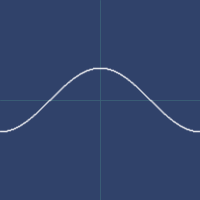Plot of cos
cos-interpolation
(cos-interpolation start stop t)oF interpolateCosine interpolation. See also lerp/mlerp, quad-interpolation or smooth-interpolation.
Examples
Example
(cos-interpolation 0.0 1.0 0.123)
;;=> 0.03686712449046664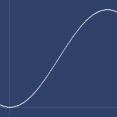Plot of cos-interpolation
cosh
macro
(cosh x)net.jafama.FastMath/cosh function wrapped in macro.
Examples
Usage
(fastmath.core/cosh 1.0)
;;=> 1.543080634815244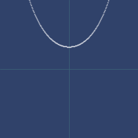Plot of cosh
cot
(cot v)Cotangent
Examples
Usage
(fastmath.core/cot 1.0)
;;=> 0.6420926159343309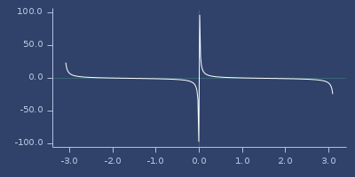Plot of cot
coth
(coth v)Hyperbolic cotangent
Examples
Usage
(fastmath.core/coth 1.0)
;;=> 1.3130352854993315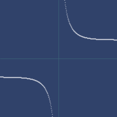Plot of coth
csc
(csc v)Cosecant
Examples
Usage
(fastmath.core/csc 1.0)
;;=> 1.1883951057781215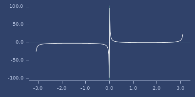Plot of csc
csch
(csch v)Hyperbilic cosecant
Examples
Usage
(fastmath.core/csch 1.0)
;;=> 0.8509181282393214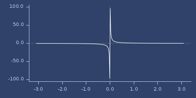Plot of csch
degrees
(degrees rad)Convert radians into degrees.
Examples
Let’s convert \(\pi\) radians to degrees.
(degrees PI)
;;=> 180.0delta-eq
(delta-eq a b)(delta-eq a b accuracy)Checks equality for given accuracy (default 1.0e-6).
difference-of-products
(difference-of-products a b c d)Kahan’s algorithm for (ab)-(cd) to avoid catastrophic cancellation.
digamma
macro
(digamma x)Logarithmic derivative of \(\Gamma\).
Examples
Usage
(fastmath.core/digamma 1.0)
;;=> -0.5772156677920679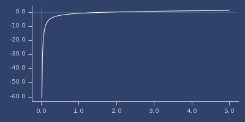Plot of digamma
dist
(dist [x1 y1] [x2 y2])(dist x1 y1 x2 y2)Euclidean distance between points (x1,y1) and (x2,y2). See fastmath.vector namespace to see other metrics which work on vectors.
Examples
Distance between two points.
(dist 1 3 -2 10)
;;=> 7.615773105863909double-array->seq
Convert double array into sequence.
Alias for seq.
Examples
Convert
(double-array->seq (seq->double-array [4 3 2]))
;;=> (4.0 3.0 2.0)double-double-array->seq
(double-double-array->seq res)Convert double array of double arrays into sequence of sequences.
Examples
Convert
(double-double-array->seq (seq->double-double-array
[[4 3 2] (double-array [1 2 3])]))
;;=> ((4.0 3.0 2.0) (1.0 2.0 3.0))double-one-minus-epsilon
const
;;=> 0.9999999999999999Value of 0x1.fffffffffffffp-1d = 0.(9)
erf
macro
(erf x)(erf x y)Error function. For two arguments return difference between (erf x) and (erf y).
Examples
Usage
(fastmath.core/erf 1.0)
;;=> 0.8427007929497151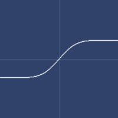Plot of erf
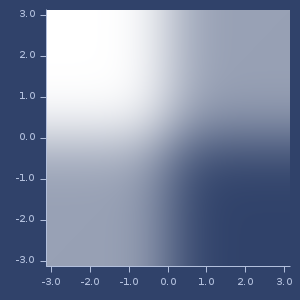Plort of 2d erf
erfc
macro
(erfc x)Complementary error function.
Examples
Usage
(fastmath.core/erfc 1.0)
;;=> 0.15729920705028488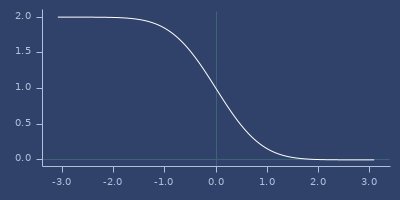Plot of erfc
exp
macro
(exp x)net.jafama.FastMath/exp function wrapped in macro.
Examples
Usage
(fastmath.core/exp 1.0)
;;=> 2.7182818284590455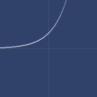Plot of exp
expm1
macro
(expm1 x)net.jafama.FastMath/expm1 function wrapped in macro.
Examples
Usage
(fastmath.core/expm1 1.0)
;;=> 1.7182818284590455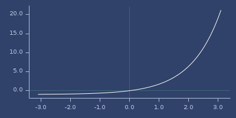Plot of expm1
floor
(floor x)(floor x scale)\(\lfloor x \rfloor\). See: qfloor.
Rounding is done to a multiply of scale value (when provided).
Examples
Scaled floor
(floor 234.312 10)
;;=> 230.0
(floor 234.312 0.1)
;;=> 234.3
;; Test: ok.Usage
(fastmath.core/floor 1.0)
;;=> 1.0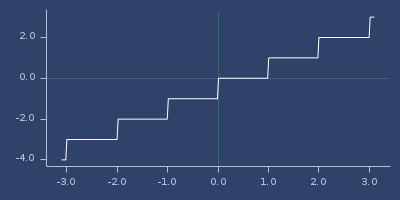Plot of floor
fpow
macro
(fpow x y)Fast version of pow where exponent is integer.
Examples
Example
(fpow 1.23 4)
;;=> 2.28886641
(fpow 1.23 4.123)
;;=> 2.28886641
(fpow 1.23 4.999)
;;=> 2.28886641
(fpow 1.23 5)
;;=> 2.8153056842999997
(fpow 1.23 -2)
;;=> 0.6609822195782934frac
(frac v)Fractional part, always returns values from 0.0 to 1.0 (exclusive). See sfrac for signed version.
Examples
Examples
(frac 0.555)
;;=> 0.555
(frac -0.555)
;;=> 0.555Usage
(fastmath.core/frac 1.0)
;;=> 0.0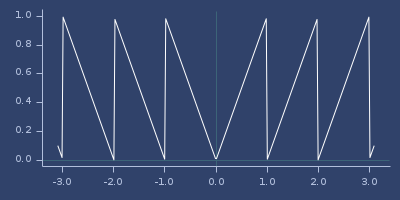Plot of frac
gamma
macro
(gamma x)Gamma function \(\Gamma(x)\)
Examples
Usage
(fastmath.core/gamma 1.0)
;;=> 1.0Plot of gamma

gcd
(gcd a b)Fast binary greatest common divisor (Stein’s algorithm)
Examples
Usage
(gcd 340 440)
;;=> 20
(gcd (* 123 5544331) (* 123 123))
;;=> 123
(gcd -234 -432)
;;=> 18group-by-intervals
(group-by-intervals coll)(group-by-intervals intervals coll)Group sequence of values into given intervals.
If intervals are missing, use co-intervals to find some.
Examples
Examples
(group-by-intervals [1 2 3 4 1 2 3 4 5 1 -2])
;;=> {[-2.5 1.5] (1 1 1 -2),
;;=> [0.5 2.5] (1 2 1 2 1),
;;=> [1.5 3.5] (2 3 2 3),
;;=> [2.5 4.5] (3 4 3 4),
;;=> [3.5 5.5] (4 4 5)}
(group-by-intervals [[1 2] [3 4]] [1 2 3 4 1 2 3 4 5 1 -2])
;;=> {[1 2] (2 2), [3 4] (4 4)}haversin
(haversin v)(haversin [lat1 lon1] [lat2 lon2])(haversin lat1 lon1 lat2 lon2)Haversine formula for value or lattitude and longitude pairs.
haversine
Haversine (haversin alias)
Examples
Usage
(haversine 10)
;;=> 0.9195357645382263
(haversine [10 20] [30 10])
;;=> 0.17694529423473296
(haversine 10 20 30 10)
;;=> 0.17694529423473296Usage
(fastmath.core/haversine 1.0)
;;=> 0.22984884706593012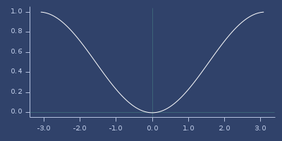Plot of haversine
haversine-dist
(haversine-dist [lat1 lon1] [lat2 lon2])(haversine-dist lat1 lon1 lat2 lon2)Haversine distance d for r=1
Examples
Usage
(haversine-dist [10 20] [30 10])
;;=> 0.8683203900985386
(haversine-dist 10 20 30 10)
;;=> 0.8683203900985386high-2-exp
(high-2-exp v)Find lowest exponent (power of 2) which is greater or equal x. See low-2-exp.
Examples
Result 5 means, that \(2^5=32\) is greater than 23.11. Lower exponent (4) gives lower value (16).
(high-2-exp 23.11)
;;=> 5For
xless than 1.0 gives negative exponent.
(high-2-exp 0.11)
;;=> -3Usage
(fastmath.core/high-2-exp 1.0)
;;=> 0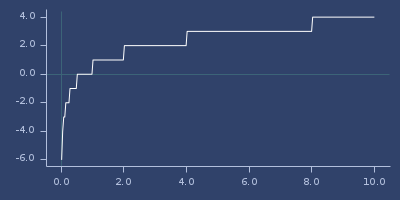Plot of high-2-exp
high-exp
(high-exp b x)Find lowest exponent for base b which is higher or equalx. See also low-exp.
Examples
Result
2means, that \(9^2=81\) is greater than23.11. Lower exponent1gives lower value9.
(high-exp 9 23.11)
;;=> 2For
xless than 1.0 gives negative exponent.
(high-exp 10 0.011)
;;=> -1hypot-sqrt
(hypot-sqrt x y)(hypot-sqrt x y z)Hypot, sqrt version: \(\sqrt{x^2+y^2}\) or \(\sqrt{x^2+y^2+z^2}\). Should be faster than hypot.
Examples
Plot of hypot-sqrt

iabs
(iabs x)\(|x|\) - long version. See abs.
Examples
Usage
(fastmath.core/iabs 1.0)
;;=> 1Plot of iabs

inf?
(inf? v)Check if number is infinite
Examples
Usage
(inf? ##Inf)
;;=> true
(inf? (/ 0))
;;=> true
(inf? 1)
;;=> false
(inf? ##-Inf)
;;=> true
(inf? ##NaN)
;;=> false
;; Test: ok.inv-erf
macro
(inv-erf x)Inverse erf.
Examples
Usage
(fastmath.core/inv-erf 1.0)
;;=> Infinity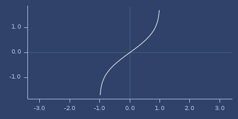Plot of inv-erf
inv-erfc
macro
(inv-erfc x)Inverse erfc.
Examples
Usage
(fastmath.core/inv-erfc 1.0)
;;=> 0.0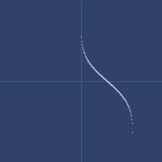Plot of inv-erfc
inv-gamma-1pm1
macro
(inv-gamma-1pm1 x)\(\frac{1}{\Gamma(1+x)}-1\).
Examples
Usage
(fastmath.core/inv-gamma-1pm1 1.0)
;;=> -0.0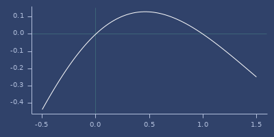Plot of inv-gamma-1pm1
invalid-double?
(invalid-double? v)Check if number is invalid
Examples
Usage
(invalid-double? ##Inf)
;;=> true
(invalid-double? (/ 0))
;;=> true
(invalid-double? 1)
;;=> false
(invalid-double? ##-Inf)
;;=> true
(invalid-double? ##NaN)
;;=> true
;; Test: ok.itrunc
(itrunc v)Truncate fractional part, keep sign. Returns long.
Examples
Examples
(itrunc 1.234)
;;=> 1
(itrunc -1.544)
;;=> -1Usage
(fastmath.core/itrunc 1.0)
;;=> 1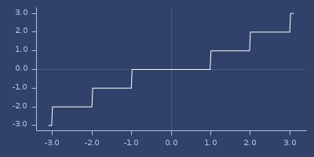Plot of itrunc
lcm
(lcm a b)Fast binary least common multiplier.
Examples
Usage
(lcm 340 440)
;;=> 7480
(lcm (* 123 331) (* 123 123))
;;=> 5007699
(lcm 331 (* 123 123))
;;=> 5007699
(lcm -234 -432)
;;=> 5616lerp
(lerp start stop t)Linear interpolation between start and stop for amount t. See also mlerp, cos-interpolation, quad-interpolation or smooth-interpolation.
Examples
Examples
(lerp 0.0 1.0 0.123)
;;=> 0.123
(lerp 0.0 100.0 0.123)
;;=> 12.3
(lerp 100 200 0.5)
;;=> 150.0Interpolate outside given range.
(lerp -1.0 1.0 1.5)
;;=> 2.0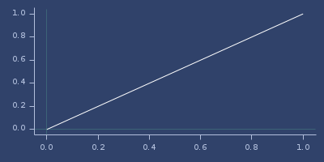Plot of lerp
ln
macro
(ln x)net.jafama.FastMath/log function wrapped in macro.
Examples
Usage
(fastmath.core/ln 1.0)
;;=> 0.0Plot of ln

log
macro
(log x)net.jafama.FastMath/log function wrapped in macro.
Examples
Usage
(fastmath.core/log 1.0)
;;=> 0.0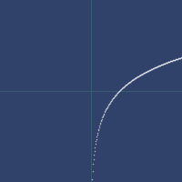Plot of log
log-gamma
macro
(log-gamma x)Log of Gamma function \(\ln\Gamma(x)\)
Examples
Usage
(fastmath.core/log-gamma 1.0)
;;=> -0.0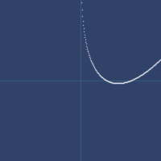Plot of log-gamma
log-gamma-1p
macro
(log-gamma-1p x)Log of Gamma function \(\ln\Gamma(1+x)\)
Examples
Usage
(fastmath.core/log-gamma-1p 1.0)
;;=> 0.0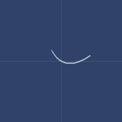Plot of log-gamma-1p
log10
macro
(log10 x)\(\ln_{10}{x}\)
Examples
Usage
(fastmath.core/log10 1.0)
;;=> 0.0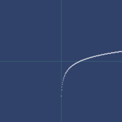Plot of log10
log1p
macro
(log1p x)net.jafama.FastMath/log1p function wrapped in macro.
Examples
Usage
(fastmath.core/log1p 1.0)
;;=> 0.6931471805599453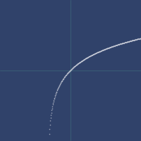Plot of log1p
log1pexp
(log1pexp x)log(1+exp(x))
Examples
Usage
(fastmath.core/log1pexp 1.0)
;;=> 1.3132616875182228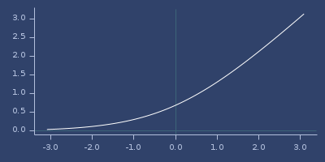Plot of log1pexp
log2
(log2 x)Logarithm with base 2.
\(\ln_2{x}\)
Examples
Usage
(fastmath.core/log2 1.0)
;;=> 0.0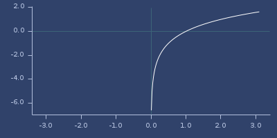Plot of log2
logit
(logit x)Logit function
Examples
Usage
(fastmath.core/logit 1.0)
;;=> Infinity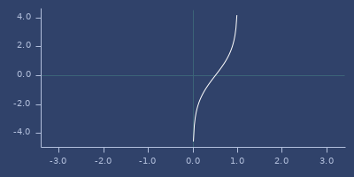Plot of logit
low-2-exp
(low-2-exp x)Find greatest exponent (power of 2) which is lower or equal x. See high-2-exp.
Examples
Result 4 means, that \(2^4=16\) is lower than 23.11. Next exponent (5) gives greater value (32).
(low-2-exp 23.11)
;;=> 4For
xless than 1.0 gives negative exponent.
(low-2-exp 0.11)
;;=> -4Usage
(fastmath.core/low-2-exp 1.0)
;;=> 0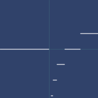Plot of low-2-exp
low-exp
(low-exp b x)Find greatest exponent for base b which is lower or equal x. See also high-exp.
Examples
Result
1means, that \(9^1=9\) is lower than23.11. Next exponent2gives greater value82.
(low-exp 9 23.11)
;;=> 1For
xless than1.0gives negative exponent.
(low-exp 10 0.011)
;;=> -2MACHINE-EPSILON
const
;;=> 1.1102230246251565E-16Smallest machine number. Value is calculated during evaluation and may differ on different processors.
make-norm
(make-norm start stop)(make-norm start stop dstart dstop)Make norm function for given range. Resulting function accepts double value (with optional target [dstart,dstop] range) and returns double.
Examples
(let [norm-cos (make-norm -1.0 1.0 0.0 1.0)] (norm-cos (cos 2.0)))
;;=> 0.29192658172642894Make normalizer from 0,255 to any range.
(let [norm-0-255 (make-norm 0 255)]
[(norm-0-255 123 -10 -20) (norm-0-255 123 20 10)])
;;=> [-14.823529411764707 15.176470588235293]mevalpoly
macro
(mevalpoly x & coeffs)mlerp
macro
(mlerp start stop t)lerp as macro. For inline code. See also lerp, cos-interpolation, quad-interpolation or smooth-interpolation.
Examples
Examples
(mlerp 0.0 1.0 0.123)
;;=> 0.123
(mlerp 0.0 100.0 0.123)
;;=> 12.3
(mlerp 100 200 0.5)
;;=> 150.0Interpolate outside given range.
(mlerp -1.0 1.0 1.5)
;;=> 2.0mnorm
macro
(mnorm v start stop)(mnorm v start1 stop1 start2 stop2)Macro version of norm.
mod
macro
(mod x y)fastmath.java.PrimitiveMath/modulus function wrapped in macro.
Examples
Modulus (compared to
clojure.coreversion).
(mod 3.123 0.333)
;;=> 0.12600000000000006
(mod -3.123 0.333)
;;=> 0.20699999999999996
(mod -3.123 -0.333)
;;=> -0.12600000000000006
(mod 3.123 -0.333)
;;=> -0.20699999999999996
(clojure.core/mod 3.123 0.333)
;;=> 0.1259999999999999
(clojure.core/mod -3.123 0.333)
;;=> 0.20700000000000013
(clojure.core/mod -3.123 -0.333)
;;=> -0.1259999999999999
(clojure.core/mod 3.123 -0.333)
;;=> -0.20700000000000013nan?
(nan? v)Check if number is NaN
Examples
Usage
(nan? ##Inf)
;;=> false
(nan? (/ 0))
;;=> false
(nan? 1)
;;=> false
(nan? ##-Inf)
;;=> false
(nan? ##NaN)
;;=> true
;; Test: ok.neg-inf?
(neg-inf? v)Check if number is negatively infinite
Examples
Usage
(neg-inf? ##Inf)
;;=> false
(neg-inf? (/ 0))
;;=> false
(neg-inf? 1)
;;=> false
(neg-inf? ##-Inf)
;;=> true
(neg-inf? ##NaN)
;;=> false
;; Test: ok.next-double
(next-double v)(next-double v delta)Next double value. Optional value delta sets step amount.
Examples
Next double.
(next-double 1234.56789)
;;=> 1234.5678900000003Next double with delta.
(next-double 1234.56789 1000)
;;=> 1234.5678900002274norm
(norm v start stop)(norm v start1 stop1 start2 stop2)Normalize v from the range [start,stop] to the range [0,1] or map v from the range [start1,stop1] to the range [start2,stop2]. See also make-norm.
order
(order vs)(order vs decreasing?)Ordering permutation. See R docs
Order uses 0 based indexing.
Examples
Usage
(order [1 1 3 2 1 1 2 3 4 3])
;;=> (0 1 4 5 3 6 2 7 9 8)
;; Test: ok.Reverse order
(order [1 1 3 2 1 1 2 3 4 3] true)
;;=> (8 2 7 9 3 6 0 1 4 5)
;; Test: ok.pos-inf?
(pos-inf? v)Check if number is positively infinite
Examples
Usage
(pos-inf? ##Inf)
;;=> true
(pos-inf? (/ 0))
;;=> true
(pos-inf? 1)
;;=> false
(pos-inf? ##-Inf)
;;=> false
(pos-inf? ##NaN)
;;=> false
;; Test: ok.
prev-double
(prev-double v)(prev-double v delta)Next double value. Optional value delta sets step amount.
Examples
Prev double.
(prev-double 1234.56789)
;;=> 1234.5678899999998Prev double with delta.
(prev-double 1234.56789 1000)
;;=> 1234.5678899997727qcos
macro
(qcos x)Fast and less accurate cos.
Examples
Usage
(fastmath.core/qcos 1.0)
;;=> 0.540171472729893Plot of qcos
qdist
(qdist [x1 y1] [x2 y2])(qdist x1 y1 x2 y2)Examples
Distance between two points (quick version).
(qdist 1 3 -2 10)
;;=> 7.481406462931432Distance between two points (accurate version).
(dist 1 3 -2 10)
;;=> 7.615773105863909qexp
macro
(qexp x)Quick and less accurate version of exp.
Examples
Usage
(fastmath.core/qexp 1.0)
;;=> 2.799318313598633Plot of qexp
qlog
macro
(qlog x)Fast and less accurate version of log.
Examples
Usage
(fastmath.core/qlog 1.0)
;;=> 0.0Plot of qlog
qsin
macro
(qsin x)Fast and less accurate sin.
Examples
Usage
(fastmath.core/qsin 1.0)
;;=> 0.8415549774368984Plot of qsin
qsqrt
macro
(qsqrt x)Approximated sqrt using binary operations with error 1.0E-2.
Examples
Usage
(fastmath.core/qsqrt 1.0)
;;=> 0.982050807866429Plot of qsqrt
quad-interpolation
(quad-interpolation start stop t)Quad interpolation. See also lerp/mlerp, cos-interpolation or smooth-interpolation.
Examples
Example
(quad-interpolation 0.0 1.0 0.123)
;;=> 0.030258Plot of quad-interpolation
quot
macro
(quot x y)fastmath.java.PrimitiveMath/quotient function wrapped in macro.
Examples
Quotient (compared to
clojure.coreversion).
(quot 3.123 0.333)
;;=> 9.0
(quot -3.123 0.333)
;;=> -9.0
(quot -3.123 -0.333)
;;=> 9.0
(quot 3.123 -0.333)
;;=> -9.0
(clojure.core/quot 3.123 0.333)
;;=> 9.0
(clojure.core/quot -3.123 0.333)
;;=> -9.0
(clojure.core/quot -3.123 -0.333)
;;=> 9.0
(clojure.core/quot 3.123 -0.333)
;;=> -9.0radians
(radians deg)Convert degrees into radians.
Examples
Let’s convert 180 degrees to radians.
(radians 180)
;;=> 3.141592653589793rank
(rank vs)(rank vs ties)(rank vs ties desc?)Sample ranks. See R docs.
Rank uses 0 based indexing.
Possible tie strategies: :average, :first, :last, :random, :min, :max, :dense.
:dense is the same as in data.table::frank from R
Examples
Usage
(rank [3 1 4 1 5 9 2 6 5 3 5])
;;=> (3.5 0.5 5.0 0.5 7.0 10.0 2.0 9.0 7.0 3.5 7.0)
(rank [3 1 4 1 5 9 2 6 5 3 5] :average)
;;=> (3.5 0.5 5.0 0.5 7.0 10.0 2.0 9.0 7.0 3.5 7.0)
(rank [3 1 4 1 5 9 2 6 5 3 5] :first)
;;=> [3 0 5 1 6 10 2 9 7 4 8]
(rank [3 1 4 1 5 9 2 6 5 3 5] :last)
;;=> [4 1 5 0 8 10 2 9 7 3 6]
(rank [3 1 4 1 5 9 2 6 5 3 5] :min)
;;=> (3 0 5 0 6 10 2 9 6 3 6)
(rank [3 1 4 1 5 9 2 6 5 3 5] :max)
;;=> (4 1 5 1 8 10 2 9 8 4 8)
(rank [3 1 4 1 5 9 2 6 5 3 5] :dense)
;;=> (2 0 3 0 4 6 1 5 4 2 4)
;; Test: ok.Random ties
(rank [3 1 4 1 5 9 2 6 5 3 5] :random)
;;=> [4 0 5 1 6 10 2 9 8 3 7]
(rank [3 1 4 1 5 9 2 6 5 3 5] :random)
;;=> [4 1 5 0 8 10 2 9 7 3 6]
(rank [3 1 4 1 5 9 2 6 5 3 5] :random)
;;=> [3 0 5 1 6 10 2 9 7 4 8]
(rank [3 1 4 1 5 9 2 6 5 3 5] :random)
;;=> [3 1 5 0 6 10 2 9 8 4 7]rem
macro
(rem x y)fastmath.java.PrimitiveMath/remainder function wrapped in macro.
Examples
Remainder (compared to
clojure.coreversion).
(rem 3.123 0.333)
;;=> 0.12600000000000006
(rem -3.123 0.333)
;;=> -0.12600000000000006
(rem -3.123 -0.333)
;;=> -0.12600000000000006
(rem 3.123 -0.333)
;;=> 0.12600000000000006
(clojure.core/rem 3.123 0.333)
;;=> 0.1259999999999999
(clojure.core/rem -3.123 0.333)
;;=> -0.1259999999999999
(clojure.core/rem -3.123 -0.333)
;;=> -0.1259999999999999
(clojure.core/rem 3.123 -0.333)
;;=> 0.1259999999999999remainder
macro
(remainder x y)From FastMath doc: returns dividend - divisor * n, where n is the mathematical integer closest to dividend/divisor. Returned value in [-|divisor|/2,|divisor|/2]
Examples
rint
(rint x)(rint x scale)Examples
Round to double.
(rint PI)
;;=> 3.0Usage
(fastmath.core/rint 1.0)
;;=> 1.0Plot of rint
round
(round x)Examples
Round to long.
(round PI)
;;=> 3Usage
(fastmath.core/round 1.0)
;;=> 1Plot of round
round-up-pow2
(round-up-pow2 v)Round long to the next power of 2
Examples
Examples
(round-up-pow2 1023)
;;=> 1024
(round-up-pow2 1024)
;;=> 1024
(round-up-pow2 1025)
;;=> 2048Usage
(fastmath.core/round-up-pow2 1.0)
;;=> 1Plot of round-up-pow2
rqsqrt
macro
(rqsqrt x)Inversed version of qsqrt. Quick and less accurate.
Examples
Usage
(fastmath.core/rqsqrt 1.0)
;;=> 0.9662250423950712Plot of rqsqrt
safe-sqrt
(safe-sqrt value)Safe sqrt, for value <= 0 result is 0.
\( \left\{ \begin{array}{lr} 0 & : x \leq 0\\ \sqrt{x} & : x > 0 \end{array} \right. \)
Examples
Usage
(fastmath.core/safe-sqrt 1.0)
;;=> 1.0Plot of safe-sqrt
sample
(sample f number-of-values)(sample f number-of-values domain?)(sample f domain-min domain-max number-of-values)(sample f domain-min domain-max number-of-values domain?)Sample function f and return sequence of values.
range-min defaults to 0.0, range-max to 1.0.
Range is inclusive.
When optional domain? is set to true (default: false) function returns pairs [x,(f x)].
Examples
Usage
(sample identity 10)
;;=> (0.0
;;=> 0.1111111111111111
;;=> 0.2222222222222222
;;=> 0.3333333333333333
;;=> 0.4444444444444444
;;=> 0.5555555555555556
;;=> 0.6666666666666666
;;=> 0.7777777777777778
;;=> 0.8888888888888888
;;=> 1.0)
(sample identity -11 22 5)
;;=> (-11.0 -2.75 5.5 13.75 22.0)
(sample sq 1 5 5)
;;=> (1.0 4.0 9.0 16.0 25.0)
(sample sq 1 5 5 true)
;;=> ([1.0 1.0] [2.0 4.0] [3.0 9.0] [4.0 16.0] [5.0 25.0])sec
(sec v)Secant
Examples
Usage
(fastmath.core/sec 1.0)
;;=> 1.8508157176809255Plot of sec
sech
(sech v)Hyperbolic secant
Examples
Usage
(fastmath.core/sech 1.0)
;;=> 0.6480542736638853Plot of sech
seq->double-array
(seq->double-array vs)Convert sequence to double array. Returns input if vs is double array already.
Examples
Convert
(seq->double-array [1 2 3])
;;=> [D@107ddb6e
(seq (seq->double-array [1 2 3]))
;;=> (1.0 2.0 3.0)
(double-array->seq (seq->double-array [1 2 3]))
;;=> (1.0 2.0 3.0)Also works on number (treated as one element list).
(seq (seq->double-array 1))
;;=> (1.0)seq->double-double-array
(seq->double-double-array vss)Convert sequence to double-array of double-arrays.
If sequence is double-array of double-arrays returns vss
Examples
Convert
(seq->double-double-array [[1 2] [3 4]])
;;=> [[D@2058abe8
(double-double-array->seq (seq->double-double-array [[1 2] [3 4]]))
;;=> ((1.0 2.0) (3.0 4.0))Also works on seq of numbers
(seq (second (seq->double-double-array [1 2 3])))
;;=> (2.0)sfrac
(sfrac v)Fractional part, always returns values from -1.0 to 1.0 (exclusive). See frac for unsigned version.
Examples
Examples
(sfrac 0.555)
;;=> 0.555
(sfrac -0.555)
;;=> -0.555Usage
(fastmath.core/sfrac 1.0)
;;=> 0.0Plot of sfrac
sgn
(sgn value)Return -1 when value is negative, 1 otherwise. See also signum.
\( \left\{ \begin{array}{lr} 1.0 & : x \geq 0\\ -1.0 & : x < 0\\ \end{array} \right. \)
Examples
Usage
(fastmath.core/sgn 1.0)
;;=> 1.0Plot of sgn
sigmoid
(sigmoid x)Sigmoid function
Examples
Usage
(fastmath.core/sigmoid 1.0)
;;=> 0.7310585786300049Plot of sigmoid
signum
(signum value)Return 1 if value is > 0, 0 if it is 0, -1 otherwise. See also sgn.
\( \left\{ \begin{array}{lr} 1.0 & : x > 0\\ -1.0 & : x < 0\\ 0.0 & : x = 0 \end{array} \right. \)
Examples
Usage
(fastmath.core/signum 1.0)
;;=> 1.0Plot of signum
sin
macro
(sin x)net.jafama.FastMath/sin function wrapped in macro.
Examples
Usage
(fastmath.core/sin 1.0)
;;=> 0.8414709848078964Plot of sin
sinc
(sinc v)Sinc function.
Examples
Usage
(fastmath.core/sinc 1.0)
;;=> 3.898171832295186E-17Plot of sinc
sinh
macro
(sinh x)net.jafama.FastMath/sinh function wrapped in macro.
Examples
Usage
(fastmath.core/sinh 1.0)
;;=> 1.1752011936438016Plot of sinh
slice-range
(slice-range start end cnt)(slice-range cnt)Slice range to get cnt number of points evenly distanced.
smooth-interpolation
(smooth-interpolation start stop t)Smoothstep based interpolation. See also lerp/mlerp, quad-interpolation or cos-interpolation.
Examples
Example
(smooth-interpolation 0.0 1.0 0.123)
;;=> 0.041665266Plot of smooth-interpolation
smoothstep
(smoothstep edge0 edge1 x)GL smoothstep.
Examples
x from range.
(smoothstep 100 200 120)
;;=> 0.10400000000000002corner case (< x edge0)
(smoothstep 100 200 50)
;;=> 0.0corner case (> x edge1)
(smoothstep 100 200 250)
;;=> 1.0sqrt
macro
(sqrt x)\(\sqrt{x}\)
Examples
Usage
(fastmath.core/sqrt 1.0)
;;=> 1.0Plot of sqrt
sum-of-products
(sum-of-products a b c d)Kahan’s algorithm for (ab)+(cd) to avoid catastrophic cancellation.
tan
macro
(tan x)net.jafama.FastMath/tan function wrapped in macro.
Examples
Usage
(fastmath.core/tan 1.0)
;;=> 1.5574077246549018Plot of tan
tanh
macro
(tanh x)net.jafama.FastMath/tanh function wrapped in macro.
Examples
Usage
(fastmath.core/tanh 1.0)
;;=> 0.7615941559557649Plot of tanh
trigamma
macro
(trigamma x)Derivative of digamma.
Examples
Usage
(fastmath.core/trigamma 1.0)
;;=> 1.6449340668481562Plot of trigamma
trunc
(trunc v)Truncate fractional part, keep sign. Returns double.
Examples
Examples
(trunc 1.234)
;;=> 1.0
(trunc -1.544)
;;=> -1.0Usage
(fastmath.core/trunc 1.0)
;;=> 1.0Plot of trunc
unsigned-bit-shift-right
macro
(unsigned-bit-shift-right x y)fastmath.java.PrimitiveMath/unsignedShiftRight function wrapped in macro.
unuse-primitive-operators
(unuse-primitive-operators)Undoes the work of use-primitive-operators. This is idempotent.
use-primitive-operators
(use-primitive-operators)(use-primitive-operators skip-set)Replaces Clojure’s arithmetic and number coercion functions with primitive equivalents. These are defined as macros, so they cannot be used as higher-order functions. This is an idempotent operation. Undo with unuse-primitive-operators.
valid-double?
(valid-double? v)Check if number is invalid
Examples
Usage
(valid-double? ##Inf)
;;=> false
(valid-double? (/ 0))
;;=> false
(valid-double? 1)
;;=> true
(valid-double? ##-Inf)
;;=> false
(valid-double? ##NaN)
;;=> false
;; Test: ok.wrap
(wrap [start stop] value)(wrap start stop value)Wrap overflowed value into the range, similar to ofWrap.
Examples
Example 1
(wrap 0 -1 1)
;;=> -1.0Example 2 (value outside range)
(wrap -1.1 -1 1.5)
;;=> -1.0000000000000022Example 3 (reversed range)
(wrap 0.7 0.5 1.0)
;;=> 0.6000000000000001Plot of wrap